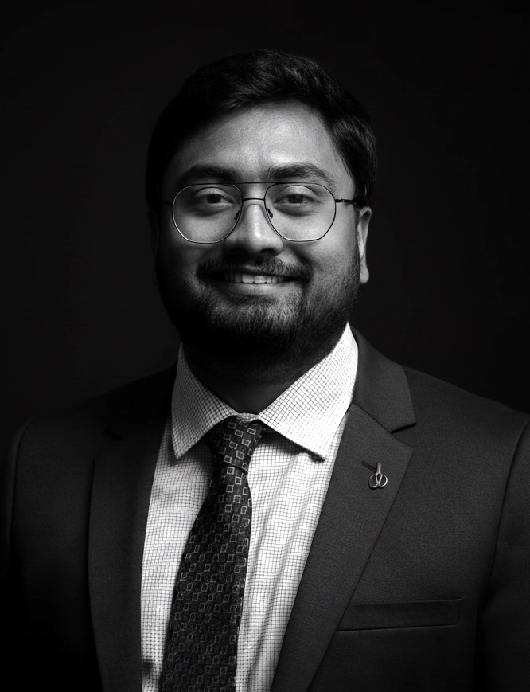

Curriculum Vitae Last updated
Assistant Professor of Aerospace Engineering, The University of Birmingham
Head of the Bio-Inspired Fluid-Structure Interaction Laboratory, Aerospace Engineering
School of Metallurgy and Materials, College of Engineering and Physical Sciences
Pritchatts Road, Edgbaston Campus, University of Birmingham, B15 2TT
Research, Teaching, Administration
Research and Education
Lecturer and Course Organiser for the course - Fluid Mechanics 4 (Mechanical)
http://www.drps.ed.ac.uk/22-23/dpt/cxmece10004.htm
Project: Dandidrone - A Dandelion-Inspired Drone for Swarm Sensing (funded by ERC).
https://voilab.eng.ed.ac.uk/dandidrone
Advisor: Prof. Ignazio Maria Viola.
Advisor: Prof. Grigorios Dimitriadis.
Advisors: Prof. Sunetra Sarkar & Prof. Sayan Gupta.
Thesis: Dynamical Analysis of Unsteady Flow Phenomena around Flapping Wings
Overall GPA: 9.57/10 (10/10, based on 10 best courses required for 30 credits)
Achievements:
Final Year Project: Design of Civil Structures Subjected to Wind and Earthquake Loads.
Overall GPA: 9.01/10
Achievement: First Class Honors, University Gold Medalist.
Project: Numerical and Experimental Investigation of Three-Dimensional Dynamic Stall at Low to Moderate Reynolds Numbers: Prediction and Control.
Promoters: Prof. Grigorios Dimitriadis and Prof. Vincent Terrapon, Dept. of Aerospace and Mechanical Engineering, University of Liege, Belgium.
Project: Numerical and Experimental Investigation of the Non-Linear Fluid-Structure Interaction Dynamics of Flapping Wings in Turbulent Flows.
Promoter: Prof. Grigorios Dimitriadis, Dept. of Aerospace and Mechanical Engineering, University of Liege, Belgium.
Project: Simulating Nature in Exa-Scale: GPU-Accelerated Fluid-Structure Interaction Modelling of Bio-Inspired Drone Swarms.
Co-investigator: Dr. Somnath Roy, IIT Kharagpur, India.
Project: Investigating Collective Flight & Swimming For Bio-Inspired Robotics.
Project: DeepSight: Data-Driven Early Detection of Glaucoma and Virtual Surgery Modelling.
Project: Wave propagation and impulse enhancement in squid-inspired flexible nozzles subjected to rotary wake.
Project: DeepSight: Smarter Glaucoma Detection via Spatio-Temporal Deep Learning.
Project: GPU-Accelerated Solver Development for Simulating Butterfly Swarms.
Project: Development of a Multi-GPU Fluid-Structure Interaction Solver for Simulating Bio-Inspired Flapping Flight.
Co-investigator: Dr. Somnath Roy, IIT Kharagpur, India.
Project: Wave Energy Conversion through the Wave-Structure Interaction of Bioinspired Flexible Membranes.
Co-investigator: Prof. Ramiro Godoy-Diana, CNRS.
Project: Open-Source Code and Software Impact Pathways.
Project: Colloquium on Bio-Inspired Fluid-Structure Interaction.
Co-investigator: Prof. Ramiro Godoy-Diana, CNRS.
Project: Vortex-Dominated Flow Physics of Bio-Inspired Porous and Flexible Structures
Co-investigator: Prof. Ramiro Godoy-Diana, CNRS.
Project: Investigation of Bio-Inspired Multi-Phase Fluid-Structure Interaction Problems.
Project: Flight dynamics of free-falling three-dimensional porous bodies subjected to stochastic transverse gusts.
Co-investigator: Dr. Ignazio Maria Viola, Reader, School of Engineering, University of Edinburgh.
Project: Fluid-Structure Interaction and wake dynamics of dandelion seed flight under gust.
Co-investigator: Dr. Ignazio Maria Viola, Reader, School of Engineering, University of Edinburgh.
Journal of Fluid Mechanics, Journal of Fluids and Structures, Physics of Fluids, Journal of Fluids Engineering, AIAA Journal, Aerospace Science and Technology, Nonlinear Dynamics, Mechanical Systems and Signal Processing, Nature Scientific Reports, Royal Society Proceedings B (Selected).
ProjectMultiphysics Modelling of the EAF Process for Sustainable Steelmaking (IGNITE Project)
Ph.D. ThesisData-Driven Optimisation, Control, and Reduced-Order Modelling of Fluid-Structure Interaction Problems
Ph.D. ThesisFlow in Anisotropic Media: Directional Solidification and Defect Formation
Ph.D. ThesisDesign of Bio-Inspired Active Morphing Wingtip
Ph.D. ThesisFluid-Structure Interaction and Gust Response of Actively and Passively Morphing Wings
Funded by EPSRC DLA
Ph.D. ThesisDevelopment of a GPU-Accelerated Flow Solver for Bio-Inspired Flight
Funded by University of Birmingham
Ph.D. ThesisModelling and Simulation of Fluid-Structure Interaction Systems with Variable Flexibility
Funded by EPSRC DLA – UKRI record
Ph.D. ThesisWake Dynamics of Porous Discs
Funded by EPSRC CDT in Wind and Marine Energy Systems and Structures
Ph.D. ThesisExperimental Investigation of Bifurcations and Synchronization in Stall-Induced Aeroelastic Systems
Now: Post-Doctoral Researcher, University of BristolPost PhD: Post-Doctoral Researcher, American University of Sharjah
Ph.D. ThesisStudy of Vortex Stability in Swept Wing Configurations
Now: Modelling & Simulation Systems Engineer, Lockheed MartinPost PhD: CFD Aerodynamics Engineer, Dynamique
Ms. Lois Martin, Ms. Taran Jandu, Mr. Ayush Das, Mr. Derin Castaban, Mr. Daniel Butler, Mr. Rio Osman
M.Eng. Group ProjectSkyAid: Fixed-Wing UAV Design for Sustainable Agriculture and Medical Logistics
Mr. Aman Shukla
M.Tech. ThesisCFD Simulation of Butterfly-Mimetic Flyers
Ms. Hibah Saddal
M.Sc. ThesisMathematical Modelling of Vortex-Induced Vibrations
Mr. Callum Bruce
MRes ThesisAerodynamics of porous flat plates
Mr. Saiyed Shahrukh Khan
M.Tech. ThesisDrop impact dynamics on hydrophobic and hydrophilic surfaces
Mr. Loic Martin
Master’s ThesisFlow dynamics of tandem rough cylinders
Mr. Vignesh S. P.
M.Tech. ThesisAerodynamics Investigation of Whale-Inspired Wind Turbine Blades
Mr. Abraham Thomas Chirathalattu
M.Tech. ThesisSuppressing the Instability due to Fluid-Structure Interactions using a Nonlinear Energy Sink
Mr. Muhammad Najvan
M.Tech. ThesisEffect of thickness on the wake dynamics of flapping foils
Mr. Brijesh K. Suman
M.Tech. ThesisWake deflection and jet switching behind tandem airfoils